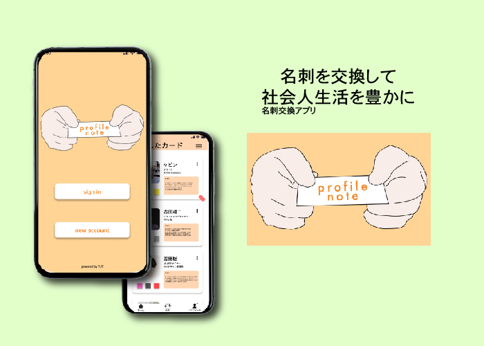

プラスチック削減のためのアプリケーション
海洋プラスチック問題を解決するためにUIUXでできることを考察し
ユーザーアンケートなどを活用しながらアプリケーションを作成しました。
使い捨てのカップではなく一定の期間使い続けることができるmyボトルの使用を促進するアプリケーションです。
全体的に明るい色を使用し雰囲気はターゲットの若者に合うように仕上げました。

新社会人のための名刺交換アプリ
コンセプトは新社会人のコミュニケーション不足問題を解決したいという考えから
この名刺交換アプリを構想し制作しました。
タグ分け機能やバーコードでの交換機能などを搭載することで
若い人が使いやすいようにしました。
home
contact
place
〒144-8535
東京都大田区西蒲田
５丁目２３−２２
Tell 070-4107-4644
Mail d0a2201098@teu.edu.ac.jp